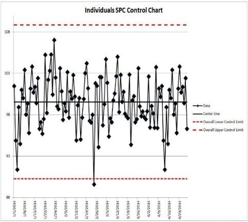
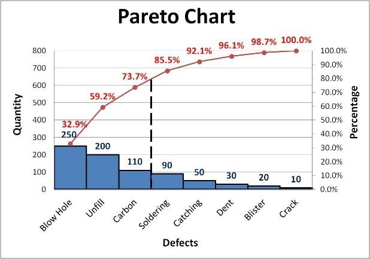
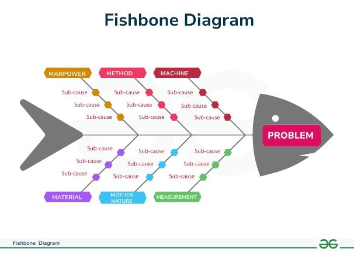

Empowering engineering & diploma graduates with practical, shop-floor exposure and cross-disciplinary technical fluency.
Real Practical Exposure
Students graduate with actual shop-floor skills, diagnostic capabilities, and project experience — not just theory.
Worldwide Recognition
Recognized certification badges validate competencies in automation and boost employability across multinational employers.
Leadership Mindset
Mastery of Kaizen, Lean frameworks, and SPC prepares young engineers for fast-track leadership and plant management roles.
Versatile Engineering
Electrical, Mechanical, and Production engineers gain overlapping automation skillsets, making them versatile, high-demand hires.
Delivering world-class industry training directly on-site with massive cost efficiencies and local industry tie-ups.
Direct access to industrial tools like PLCs, hydraulics, pneumatics, quality analysis kits, and lean production dashboards without traveling far.
Avoid expensive PG accommodations, daily transport, and relocation costs. Students save nearly half compared to relocating for training elsewhere.
Industry-oriented curriculum ensures graduates are job-ready with practical portfolio projects, boosting recruitment in automation, quality, and production.
On-site delivery makes training accessible and affordable, integrating live case studies from Delhi-NCR manufacturing hubs into the coursework.
Built around actual factory workflows: RCA reports, PFMEA sheets, OEE dashboards, and pneumatic/hydraulic circuits solving real downtime challenges.
Every module concludes with hands-on evaluations, industry expert guest lectures, plant visits, and portfolio-ready capstone certifications.
Complete multi-track mapping of specialized career paths, eligibility, and industrial skillsets.
| Career Path | Eligibility | Key Skills & Tools Covered |
|---|---|---|
| Quality | B.Tech / Diploma | RCA, 5 Why, Fishbone Diagram, Pareto Chart, SPC, CAPA, CpK, MSA |
| Maintenance | B.Tech / Diploma | PLC, HMI, Sensors, Troubleshooting, PdM (Predictive Maintenance), PM (Preventive Maintenance), Spare Parts Management |
| Production | B.Tech / Diploma | OEE, 5S, Kaizen, Line Balancing, Cycle Time, Takt Time, 8 Waste of Lean Manufacturing, Poka-Yoke, Kanban, Andon, Single Piece Flow |
| Process Engineering | B.Tech / Diploma | Control Plan, Check Sheet, Work Instruction, PFMEA, PFD (Process Flow Diagram), Process Mapping |
| Mechanical | B.Tech / Diploma | Pneumatic Circuit, Hydraulic Circuit, Ball Bearings, Gears, Belts & Pulley Systems |
Purpose: Build analytical mastery for defect prevention, statistical quality control, and systematic process improvement.



| Tool | Function | Outcome |
|---|---|---|
| RCA | Identify true cause of recurring issues | Permanent corrective action |
| 5 Why | Simplify cause tracing | Quick problem isolation |
| Fishbone Diagram | Visualize cause categories | Team brainstorming clarity |
| Pareto Chart | Prioritize major contributors | Focus on high-impact issues |
| SPC | Monitor process variation | Predict and prevent defects |
| CAPA | Implement corrective/preventive measures | Sustainable quality improvement |
| CpK | Evaluate process capability | Quantify performance vs specs |
| MSA | Validate measurement accuracy | Reliable inspection data |
Objective: Master industrial equipment upkeep, PLC/HMI telemetry, predictive diagnostics (PdM), and automated plant reliability.
| Tool / Concept | Purpose | Application Example |
|---|---|---|
| PLC | Control automation systems | Troubleshooting machine logic errors |
| HMI | Interface for operator control | Monitor process parameters |
| Sensors | Detect physical conditions | Temperature, pressure, vibration monitoring |
| Troubleshooting | Identify and fix system faults | Electrical and mechanical diagnostics |
| PdM (Predictive) | Predict failures using data | Vibration and oil analysis |
| PM (Preventive) | Schedule routine checks | Weekly inspection plans |
| Spare Parts Management | Optimize inventory and availability | Reduce downtime through efficient stock control |
Robot demonstrates PLC and sensor diagnostics.
Virtual troubleshooting of HMI and PLC systems.
Apply PdM using vibration and temperature data.
Create PM schedules and spare-parts inventory lists.
Interactive mastery tracking after each completed tool.
"Maintenance Expert" credential awarded upon completion.
Objective: Optimize manufacturing processes, eliminate the 8 wastes of lean, maximize OEE, and streamline shop-floor throughput.
| Tool / Concept | Purpose | Application Example |
|---|---|---|
| OEE | Measure equipment efficiency | Identify downtime and performance losses |
| 5S | Workplace organization | Improve safety and reduce waste |
| Kaizen | Continuous improvement | Small daily changes for big results |
| Line Balancing | Optimize workflow | Reduce bottlenecks and idle time |
| Cycle Time & Takt Time | Synchronize production rate with demand | Improve throughput |
| 8 Waste of Lean | Identify non-value-added activities | Eliminate inefficiencies |
| Poka-Yoke | Prevent human errors | Design fail-safe mechanisms |
| Kanban | Visual workflow control | Manage inventory and production flow |
| Andon | Real-time problem signaling | Immediate response to issues |
| Single Piece Flow | Streamline production | Reduce lead time and improve quality |
Robot introduces lean principles with factory visuals.
Apply OEE and 5S in virtual production lines.
Balance assembly lines and calculate takt time.
Implement Poka-Yoke and Kanban systems in plant scenarios.
Animated bars show mastery of each lean manufacturing tool.
"Production Expert" credential awarded upon completion.
Objective: Master process optimization, risk mitigation with PFMEA, standard work instructions, and workflow analysis.
| Tool / Concept | Purpose | Application Example |
|---|---|---|
| Control Plan | Define process monitoring methods | Ensure consistent product quality |
| Check Sheet | Collect and organize data | Track defect frequency |
| Work Instruction | Standardize tasks | Guide operators step-by-step |
| PFMEA | Identify potential failures | Prevent risks in new processes |
| PFD | Visualize process steps | Map inputs, outputs, and flows |
| Process Mapping | Document workflows | Spot inefficiencies and redundancies |
Objective: Strengthen mechanical understanding and hands-on skills for industrial systems, pneumatic/hydraulic circuits, and machine components.
| Tool / Concept | Purpose | Application Example |
|---|---|---|
| Pneumatic Circuit | Control motion using compressed air | Operate actuators and valves |
| Hydraulic Circuit | Transmit power through fluid pressure | Lift heavy loads and control presses |
| Ball Bearings | Reduce friction between moving parts | Support rotating shafts |
| Gears | Transfer torque and speed | Used in gearboxes and conveyors |
| Belts & Pulley Systems | Transmit motion between pulleys | Power transmission in machines |
Key pillars delivering high-impact career transformation and technical leadership.
Work with real automation systems, pneumatic trainers, PLC racks, and simulation environments.
Learn directly from experts with global credentials and mentoring from distinguished IIT & IIM alumni.
Build portfolio-worthy industrial solutions solving real-world factory downtime and defect reduction cases.
Convenient online live sessions, hybrid laboratory setups, and dedicated on-site campus bootcamps.
Connect with peers, alumni, and manufacturing leaders worldwide to accelerate your career placement.
Earn verified NextGen Automation certification badges recognized by manufacturing employers nationwide.
India’s manufacturing, automotive, EV, and smart factories are undergoing massive transformation — creating unprecedented demand for skilled automation engineers.
India is emerging as a global manufacturing hub with heavy investments in EV plants, smart factories, robotics assembly, and electronics manufacturing.
Graduates with practical hardware and software automation fluency secure high-growth, high-paying career profiles.
Hands-on lab training bridges the college-to-corporate gap, enabling students to crack technical interviews and plant assessments on Day 1.
Join live hardware labs and case study simulations guided by seasoned automation professionals.
Book Free Technical Demo